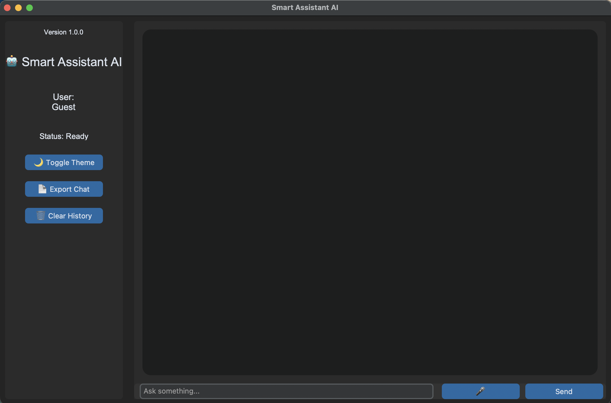
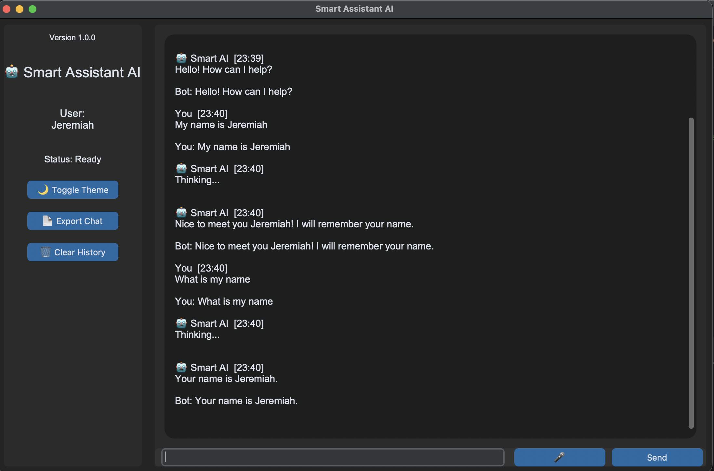
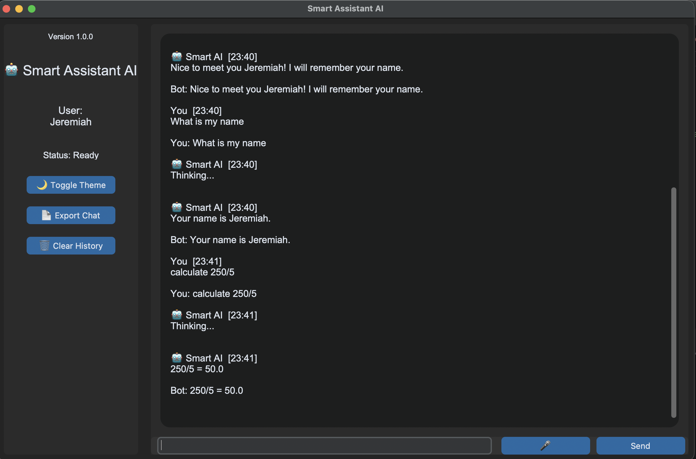
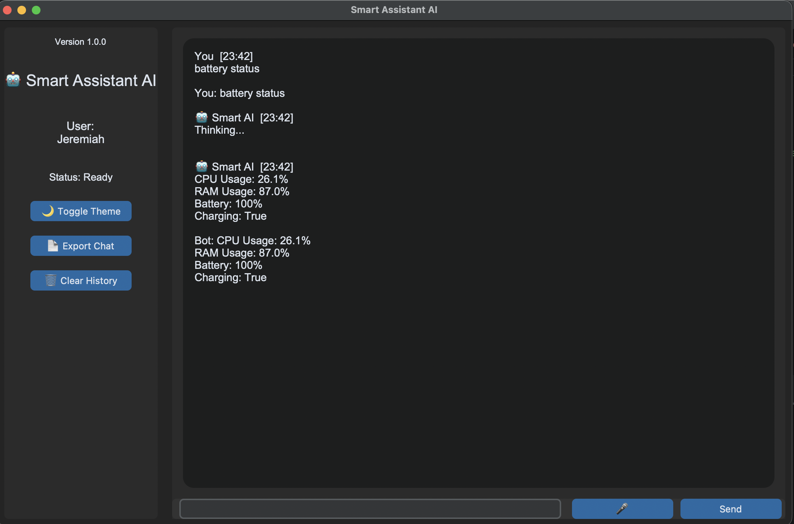

Smart Assist AI
A Python-based artificial intelligence assistant demonstrating GUI development, automation, API integration, persistent memory, and software engineering practices.
A Python-based artificial intelligence assistant demonstrating GUI development, automation, API integration, persistent memory, and software engineering practices.
Smart Assist AI is a desktop productivity assistant built with Python. The application combines artificial intelligence, automation tools, voice interaction, system monitoring, and persistent user memory.

Core Application Language
Integrated Modules
Initial Release
Native Deployment
Interactive assistant interface with intelligent responses.
Stores preferences and conversation information.
Text-to-speech response capability.
Calculator, monitoring, search, and utilities.
Demonstrates reduction of repetitive workflows.
Uses modular architecture and reusable components.
Foundation for advanced engineering AI tools.
CustomTkinter Desktop Application
Chat Management
Command Processing
Workflow Routing
AI Engine
Calculator
Voice Engine
System Monitor
JSON Memory Storage
Wikipedia API
External Services




Desktop assistant foundation completed.
Local LLM integration.
Voice input capability.
Engineering workflow automation.